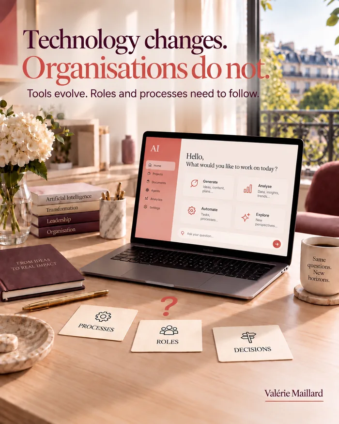

AI transformation rarely fails
because of the technology.
It fails when the organisation
has not changed, only the tool.
 Article developed from my LinkedIn post ()
Article developed from my LinkedIn post ()
Updated on
Short version →
SME leaders: AI transformation rarely fails because of the technology.
According to an estimate cited by RAND Corporation, more than 80% of AI projects fail. The cause: a lack of alignment with the organisation, not a lack of tools.
A real transformation touches three things, in this order: who decides, which processes are redesigned, which roles change.
The sign it has not happened: there are still just as many approval meetings.
To get started, one page is enough: who will need to decide differently once the tool is in place?
If the answer is “no one”, you are automating what already exists. You are transforming nothing.

You run an SME and you are launching an AI project? This piece is for you. During my years alongside business leaders, I saw plenty of tools and transformation plans come and go. AI did not yet exist in this form. But the story was already the same.
The tool is rarely the problem. The problem is everything that does not move around it.
We saw it with every technology wave: ERP systems in the 2000s, then CRM, then the cloud more recently. Each time, the tool kept its technical promises. Each time, some of the companies that adopted it got only a fraction of the promised value, because nothing else had changed around it.
A RAND Corporation report cites an estimate worth pausing on: more than 80% of AI projects fail. The reason is not technical: these projects are not aligned with the company’s priorities and organisation.
That figure does not mean AI does not work.
It means a tool, on its own, transforms nothing.
🔧 Why is changing the software not enough?
Because you keep the same processes, the same roles, the same meetings where nobody decides.
The result: AI is added on top of what exists. It does not change it.
The surest sign that no transformation happened? There are still just as many approval meetings. A new tool that goes through exactly the same approval circuit, with the same people consulted in the same order, has transformed nothing. It sped up one link. The chain is just as long as before.
Have economists already named this pattern?
Yes, and for a long time. Back in 1987, economist Robert Solow observed, about the computerisation of companies: “You can see the computer age everywhere but in the productivity statistics.” Researchers Erik Brynjolfsson and Lorin Hitt later showed why. Technology only pays off when it comes with an equivalent investment in the organisation, often invisible in budgets: redesigning processes, redistributing decisions, evolving roles.
Generative AI is doing exactly the same thing, only faster. The tool is installed in a few weeks. The organisation takes months, sometimes years, to follow, when it follows at all. That gap is what the estimate cited by RAND shows: only one project in five would cross it successfully.
What does this mean concretely for a mid-sized company’s leader?
A very direct consequence: the budget for an AI project should never stop at the licence and the technical integration. Keep part of it for the time you will spend with the teams working out who decides what, once the tool is in place. That time appears on no supplier invoice. Yet it is what decides whether your project joins the four in five that fail, or the fifth that succeeds.
Six months after launch, run a simple test. Ask the team to describe how they work without mentioning the tool. If the description matches the old one line for line, with one extra step, nothing has been transformed. The software changed. The work did not.
🎯 What three things does a real AI transformation have to touch?
- Who decides, and when.
- Which processes are rethought, not just automated.
- Which roles genuinely evolve.
If the decision stays at the same level as before, automating only speeds up a bottleneck that was already there. Doing a useless step faster does not make it useful. If nobody changes what they do with the time saved, that time fills up with something else, with no gain for the company. These three points are checked one by one: you can automate without deciding differently, or decide differently without any role changing. Either way, one is missing to call it a transformation.
Without these three changes, the company quickly slips back into its old habits, with one more tool.
In what order should you tackle these three points?
The order matters. First, who decides and when: until that is clear, nobody knows which process to redesign first. Then the process. Then the roles. A role does not change because someone announced it would. It changes because the actual work has changed shape.
Starting at the end, by announcing that roles will change without having redesigned either the decision or the process, rarely gives the result you hoped for. The message changes, and the results stay the same.
Where should you start, concretely?
Before any AI project, do not ask what the tool will do. Ask who will need to decide differently once it is in place. If the answer is “no one”, you are automating what exists, not transforming anything.
That map fits on one page. Its shortness is exactly what makes it impossible to dodge. Do it in an hour, with the heads of the teams concerned: for each decision the tool touches, write down who makes it today, who will make it tomorrow, and when.
How can you quickly tell where your organisation stands?
Three questions are usually enough to see where an AI project stands. Answer them honestly, with the team that uses the tool every day, not only with the person who chose it. The gap between the two sets of answers is often a finding in itself.
- Has anyone, since rollout, made a decision they would not have made before, with the same authority as before?
- Has a process lost a step, rather than gained one?
- Has anyone seen their role redefined, not just their tool?
If you answer no three times, the project stands a good chance of joining the four in five that fail, according to the estimate cited by RAND, however good the chosen AI is. The reverse holds too: three yeses mean the company has started to change, even if the tool itself is modest.
This test does not replace a full diagnosis. But it takes ten minutes, needs no consultant, and tells you straight away whether the topic deserves a closer look. It is the first question I would ask about an AI project already under way: not “which tool did you choose?”, but “who, at your company, decides differently since it went live?”.
💬 In your organisation,
what should change before the tool, not after?
Going further
Four more questions to take the thinking further.
Read the full articleabout 3,000 words
How is generative AI different from earlier waves?
On one point, it changes everything: it comes in through employees, not through leadership. An ERP or a CRM was rolled out from the top, with a project, a budget and a timeline. A generative AI tool is downloaded in two minutes, without asking anyone.
So transformation no longer starts from a plan. It starts from uses that already exist, often invisible, which leadership must first discover before it can steer them. It is not only the speed that changes: it is the starting point.
Why does productivity often dip before it rises?
Because a company that changes the way it works first pays a learning cost. Economists, including Erik Brynjolfsson, call this a J-curve: performance dips while teams learn and processes are reorganised, then climbs above where it started.
Knowing this curve avoids a common mistake: stopping a project at the bottom of the dip, just when the effort is starting to pay off. Announce the dip in advance, with its likely length: you also protect the teams’ trust.
Which process should you start with?
The one that ticks four boxes:
it comes up often, every day or every week;
it frustrates people, those who do it and those waiting for the result;
its result is visible, to a client or to leadership;
it only involves one or two teams.
A first success on a process like that is worth more than an ambitious project that gets bogged down. It brings proof, and proof makes people want to continue elsewhere.
Should you automate first, then transform?
Starting by automating one step is not a mistake, as long as you do it knowingly. Automation lets you learn, measure and reassure.
The mistake is stopping there. With every automation, ask one question in writing: if this step goes faster, which decision or which next step must change for the gain to reach the client? Without that question, you pile up local speed-ups that never join together.
How do you handle the period when old and new run side by side?
By giving it an end date. Keeping the old process next to the new one reassures people at first, then becomes the worst of both worlds: everyone does their work twice, and nobody knows which version counts.
A switchover date, known to everyone, settles the question. Before that date, the old process remains the reference. After it, only the new one counts, and the old one disappears, including the files and shortcuts that would let people quietly go back to it.
An example: handling quotes in an SME
Before the project, a quote follows this circuit:
the salesperson gathers the information and writes a first draft;
the technical lead checks it is feasible;
leadership approves the price;
the assistant formats and sends it.
An AI tool can prepare the first draft in a few minutes. If the rest of the circuit does not change, the quote simply waits longer at the next step.
The real transformation is asking, for example, whether leadership needs to approve every price, or only those outside an agreed grid. And whether the technical check can rely on a checklist prepared by the tool. The gain comes from those two decisions far more than from faster drafting.
What new roles are emerging?
Not necessarily new jobs, but new responsibilities. Better to name them than to leave them floating.
Three come up often:
the go-to person, who knows the tool and answers colleagues’ questions;
the reviewer, who checks what the tool produces before it leaves the team;
the process owner, who decides how the circuit evolves and settles things when two teams disagree.
These responsibilities take time. If they are added without taking anything else away, they are done badly, then not at all.
Which skills should come first?
Less technical skill than three core abilities: saying clearly what you expect, checking what you get, and judging when the result is not right.
These skills are nothing new. They belong to anyone who knows how to delegate: hand over a task, check the result, take back control if needed. Managers who already have them adapt quickly to AI tools. Those who never developed them discover the problem at that point.
How do you measure that a transformation is moving forward?
Four simple indicators say more than a complicated dashboard:
the time between a request and the decision that answers it;
the number of steps in the processes concerned;
the share of teams actually using the new tools;
the time freed up, and what it is used for.
Recorded at launch and then every quarter, these figures tell the real story of the project, far better than impressions shared in meetings.
How do you stop the project resting on one person?
Many transformations have an engine: an enthusiastic person who found the tool, convinced leadership and trained colleagues. The day that person changes jobs, the project fades out.
The fix: form a pair early on, then a small group, sharing knowledge and decisions. Writing down what you have learned, the instructions that work, the mistakes to avoid, is as much part of the project as the rollout itself.
Should you tell your clients?
Yes, as soon as the transformation changes something for them: a lead time, a contact person, the format of an answer. A client who has been told accepts an adjustment. A client who is surprised sees it as a step backwards.
Ask them for their opinion a few weeks after the switchover. You will get a measure your internal indicators cannot give: has the change improved their experience, or only the company’s?
How long should you allow?
Longer than rolling out the tool, and less time than you fear if you go step by step. On a limited process, a few months are often enough to see the decision, the circuit and the roles move.
What stretches timelines is rarely the technology. It is the decisions that keep being postponed: who approves now, which step disappears, who takes over which task. Every week of delay is paid for in double work and weary teams.
What do you tell teams about what will not change?
It is often the most awaited question, and the least addressed. A transformation worries people because it seems to call everything into question.
Say clearly what stays the same: the values, the commitments to clients, the people you report to. You give those who must change the rest something to hold on to. Change goes down better when it has known limits.
When should you bring in an outside view?
When the company can no longer see its own habits. Approval circuits, ritual meetings and unwritten roles seem natural to those who live them every day.
An outside view does not bring a ready-made solution. It asks the questions nobody asks internally any more, with no power at stake, and helps separate what is necessary from what is only habit.
What transformation really demands
Leadership time, more than budget. Tools can be bought quickly. Decisions about who decides, which processes change and which roles evolve cannot be delegated.
Leadership that agrees to give that time gets what no tool will ever give on its own: a company that works differently, not just faster.
How do you involve teams from the start?
Get them involved in describing the problem, before anyone talks about a solution. The people doing the work know the real sticking points, the ones no organisation chart shows.
A transformation built with them is far more likely to be applied than one that is simply announced.
A half-day workshop, where everyone describes a painful task from their week, often brings out more ideas than a questionnaire.
Invite an open sceptic too. Their objections, heard early, cost far less than resistance discovered after launch.
How do you know an organisation has really changed?
Three concrete signs. Decisions are made by other people, or at another time. Processes have changed in practice. Roles have evolved, and some tasks have been dropped.
If none of that has moved, the tool is installed, but the company has not changed.
It is easier to see with someone outside the day-to-day, who asks naive questions with no power at stake.
Ask the question again a few months later. Real change lasts. Cosmetic change fades as soon as attention drops.
What do you do when the transformation stalls?
Go back to the starting question: what was supposed to change, and what is blocking it? The answer is almost always a decision not taken, a process not redesigned or a role not clarified.
Adding a tool at that point makes the problem worse. First remove the obstacle within the organisation.
A short check-in, once a month, on the obstacle of the moment is enough to stop the blockage from settling in.
Write the obstacle down in black and white, with an owner and a date. A blockage nobody owns ends up worked around rather than removed.
What role does the leader play over time?
Holding the course, and making the choices visible: what continues, what stops, what we will not do. A transformation lasts months, and the leader’s attention is one of its scarcest resources.
A leader who stays present, without steering everything, gives the company permission to change.
It is also a signal: the topic remains a leadership priority, not a project quietly fading away.
A few minutes set aside for the topic at every executive committee meeting are enough to keep that signal alive.